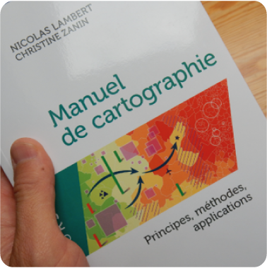

 |
Lambert, N., & Zanin, C. (2020). Practical Handbook of Thematic Cartography: Principles, Methods, and Applications. (S.l.): CRC Press. https://www.taylorfrancis.com/books/978042929196
Lambert, N., & Zanin, C. (2019). Mad Maps – L’atlas qui va changer votre vision du Monde. (S.l.): Armand Colin. https://www.armand-colin.com/mad-maps-latlas-qui-va-changer-votre-vision-du-monde
Lambert, N., & Zanin, C. (2016). Manuel de cartographie: principes, méthodes, applications. (S.l.): Armand Colin. https://www.armand-colin.com/manuel-de-cartographie-principes-methodes-applications-9782200612856